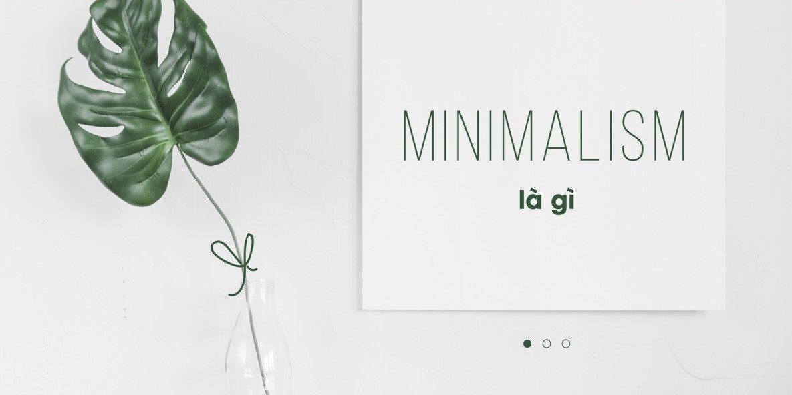
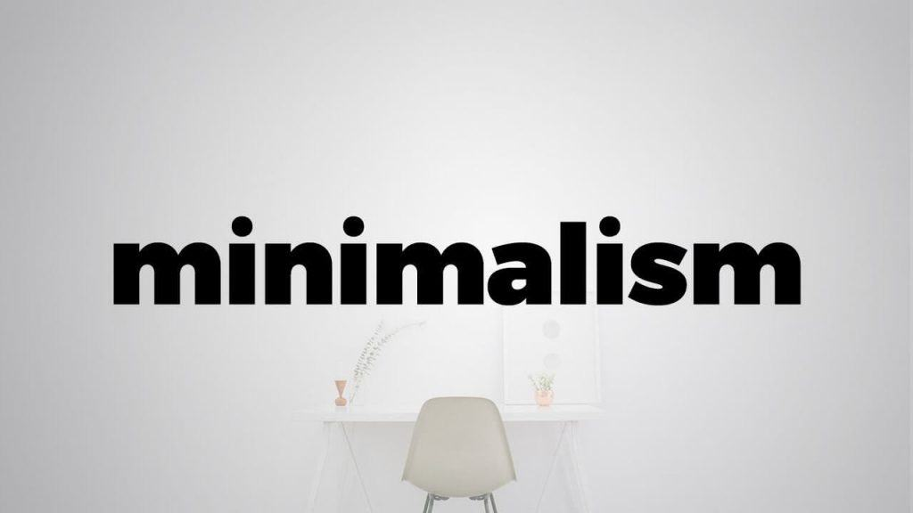
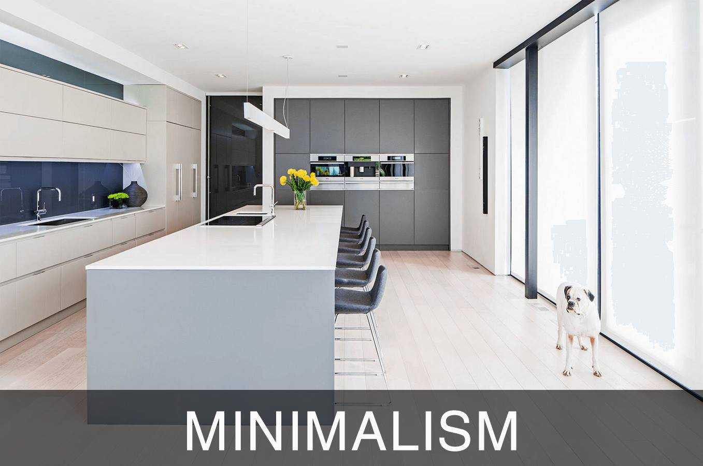

About My Project
Minimalism? Một thuật ngữ vừa mới lạ vừa gần gũi quen thuộc. Minimalism là gì trong ngành thời trang, ngành thiết kế, ngành kiến trúc và ngành nghệ thuật nói chung. Nó đã giữ được chỗ đứng vững bền trong lòng những người yêu nghệ thuật thực thụ, khiến những trái tim nhạy cảm rung cảm ngay lần thưởng ngoạn đầu tiên. Nhưng có lẽ vẫn còn rất nhiều người cảm thấy mơ hồ về khái niệm phong cách minimalism.
1. Minimalism là gì?
Minimalism dịch từ tiếng anh là phong cách tối giản, nói một cách đơn giản là vẫn thể hiện được nét nghệ thuật nhưng đơn giản hóa mọi thứ được trình bày từ tiểu tiết đến họa tiết chính đến mức tối đa. Tối giản được hiểu là đơn giản hóa trong việc thiết kế ở nhiều lĩnh vực khác nhau, và đơn giản nhiều thành phần như đường nét, kiểu dáng hay các chi tiết trang trí, không rườm rà, phức tạp. Quan trọng hơn, dù tối giản nhưng nhìn vẫn có sự hài hòa cơ bản cứ không phải là cẩu thả. Sự sử dụng hạn chế về màu sắc là tiêu biểu để nhận diện xu hướng thiết kế này.
Phong cách minimalism, nói cách khác, là “back to basic” – giản lược mọi thứ, giữ mọi thứ ở mức đơn giản nhất có thể với mục tiêu hướng đến sự thanh lịch, tinh tế.
Phong cách này ứng dụng rộng rãi trong các ngành liên quan đến thiết kế trong nội thất, thiết kế thời trang và trở thành phong cách sống mà phần lớn những người thuộc tầng lớp thượng lưu theo đuổi.
Minimalism được khẳng định là phong cách thuộc tầng lớp thượng lưu bởi lẽ nét sang trọng từ sự đơn giản nó mang lại hiếm người có thể cảm nhận được hoặc thể hiện rõ nét khi theo đuổi hoặc thể hiện
2. Lịch sử của Minimalism
Phong cách tối giản xuất phát từ nghệ thuật của phương Tây sau Chiến tranh thế giới lần thứ 2. Rõ nét nhất là các tác phẩm hội họa của họa sĩ người Mỹ gốc Nga Do Thái - Mark Rothko
Ban đầu nó chỉ là phong cách cho một bộ sưu tập mỹ thuật, nhưng sau được ứng dụng cho nhiều ngành liên quan nghệ thuật khác, điển hình là các tác phẩm của nhà soạn nhạc Steve Reich và nhà soạn nhạc Terry Riley.
Phong cách tối giản khởi nguồn bởi sự thuần khiết và cô đọng của chủ nghĩa đương đại đồng thời nó được phối cùng với chủ nghĩa Hậu hiện đại. Có thể cho rằng là phản ứng đối lập với chủ nghĩa Biểu hiện trong nội dung và trong bố cục của tác phẩm.
Ở phương tây, minimalism bắt đầu được cả thế giới chú ý vào những năm 20 nhờ Coco Chanel khi bà tìm kiếm một cấu trúc mới, mang đến sự tự do và thoải mái cho phụ nữ với quan niệm: “Tính thanh lịch được thể hiện qua sự thanh thoát và uyển chuyển của đường nét nhiều hơn qua các họa tiết trang trí và khâu đính kim sa”.
Coco Chanel – một trong những biểu tượng lớn nhất cho phong cách thời trang tối giản.
Đến thập niên 70, biểu tượng của minimalism là những chiếc váy đơn sắc và những bộ jumpsuit độc đáo của Halston. Tuy vậy, giai đoạn tỏa sáng rực rỡ nhất của minimalism được đánh dấu bằng sự xuất hiện của Miuccia Prada – người thừa kế của Prada
Miucia Prada được xem là một trong những nhân vật có tầm ảnh hưởng nhất đến diễn trình phát triển của phong cách thời trang tối giản. Với những thiết kế thanh lịch, trên nền chất liệu cao cấp, nằm ngoài cuộc chạy đua xu hướng của các nhà mốt khác, những tác phẩm của Miucia giữ cho mình sự cuốn hút tồn tại vĩnh cửu trên tiến trình phát triển của nền công nghiệp thời trang không ngừng biến đổi.
3. Minimalism ảnh hưởng như thế nào?
Minimalism ảnh hưởng đến tất cả loại hình nghệ thuật và công nghệ trong những năm cuối thế kỷ 20, chẳng hạn như hình thức gallery. Ngoài sức ảnh hưởng sâu sắc của mình đối với nghệ thuật hiện đại và các nghệ sĩ, Tối giản đã trở nên phổ biến như một triết lý và một cách sống. Nghĩa là Tối giản giải quyết các vấn đề trong cuộc sống chỉ với những yếu tố cần thiết, xua đuổi bất cứ điều gì mà họ cho là không cần thiết.
Trái với những gì mọi người thường nghĩ, Tối giản được coi là phong cách của giới siêu giàu. Nó không bao giờ được lấy cảm hứng từ sự nghèo đói hay tiết kiệm. Người tạo ra và sử dụng phong cách này có ý nghĩ là: Tôi có thể có bất cứ điều gì, nhưng tôi sẽ không làm lộn xộn, thay vào đó tôi sẽ chỉ trang trí nhưng thứ thanh lịch nhất, đối tượng đơn giản có sẵn. Người biết sẽ không bao giờ nói minimalism là một lựa chọn rẻ.
4. Giới thiệu về project
Xuất phát từ những ý tưởng đó, ý tưởng về một trang web mang lại những thông tin bổ ích cho mọi người về minimalism- chủ nghĩa phong cách tối giản được tạo ra, ở đây có thể mang lại lại cho người dùng những bài blog chia sẻ về những kiến thức đã được tìm hiểu, tiếp thu trong quá trình tìm hiểu phong cách tối giản, ở đây mọi người có thể tiếp thu những nội dung bổ ích, trau dồi thông tin nhiều hơn đồng thời chúng ta có thể nêu lên cảm xúc của chính mình từ những bài blog dựa theo suy nghĩ của nhóm chúng mình.